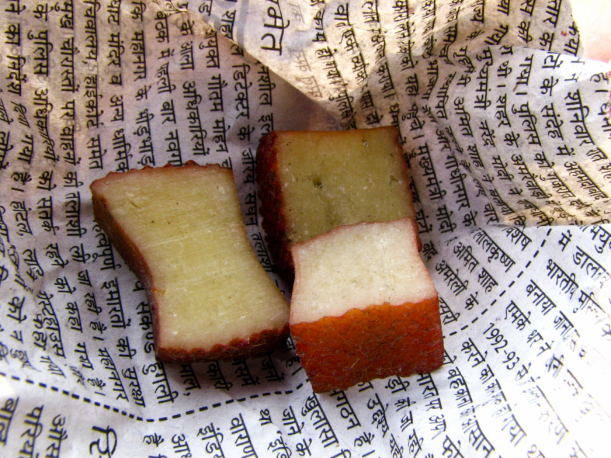
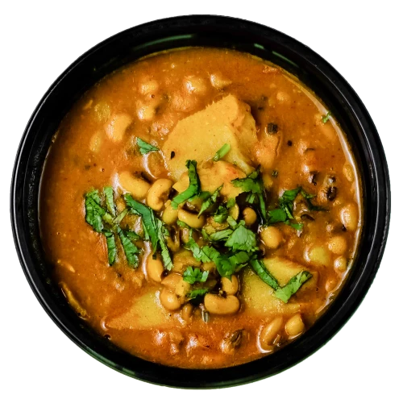

My Favorite Animals
- DOG
Favorite breeds of dogs
- Labrador Retriever
- Pitbull
- GOATS
- Chyangra (Mountain Goat)
- Khari
My Favorite Foods (Based on Regions of Nepal)
- Himalayan Region
- Churrpi (Hardened Cheese)
- 
otherwise known as durkha and chogo/chugo, is a traditional cheese consumed in Nepal, Bhutan and parts of Northeastern India.The two varieties of chhurpi are a soft variety (consumed usually as a side dish with rice) and a very hard variety. Chhurpi is considered one of the hardest cheeses in the world
- Rilduk (Traditional Sherpa Dish)
-
Rilduk is a typical authentic Sherpa dish. Sherpas inhabit mostly in Himalayan regions of Nepal. Due to the extreme cold climate they usually consume warm soupy dishes to warm up their body. As potatoes can grow in cold regions, Sherpas love to have Rilduk quite often
- Hilly Region
- Tama Bodi (Fermented Bamboo Shoot and Black-Eyed Pea Curry)
- 
Aaloo Bodi is a traditional hilly Nepali dish combining potatoes and black-eyed peas.
It reflects rural mountain diets—simple, hearty, and rich in local spices.
Often served with rice, it's a staple comfort food in many hill households.
- Gundruk
-
Gundruk is fermented leafy greens, preserved by hill farmers for winter use.
Its sour taste and long shelf life made it a survival food in the mountains.
Now a national favorite, it symbolizes Nepal’s resourceful food culture.
- Terai Region
- Thekuwa
-
Thekuwa is a sweet Nepali snack made from wheat flour, sugar, ghee, and sesame seeds, deep-fried to a crispy texture. It is especially popular during festivals like Teej. The dish originates from the Mithila region (in the southeastern part of Nepal), known for its rich culinary traditions.
- Taruwa
-
Thekuwa is a sweet Nepali snack made from wheat flour, sugar, ghee, and sesame seeds, deep-fried to a crispy texture. It is especially popular during festivals like Teej. The dish originates from the Mithila region (in the southeastern part of Nepal), known for its rich culinary traditions.
My Favourite Places
- In Nepal
- Darchula My home town
- Swoyambhunath (World Heritage Site)
- In Japan
- Tokyo
- Shibuya Crosssing
- Sensoji Temple
- Kyoto